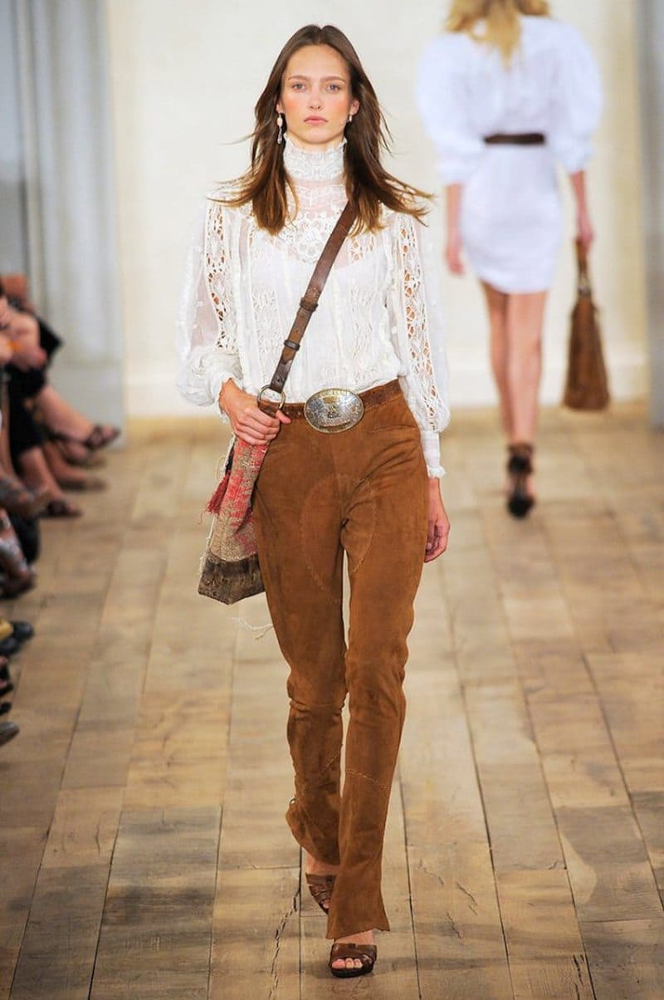
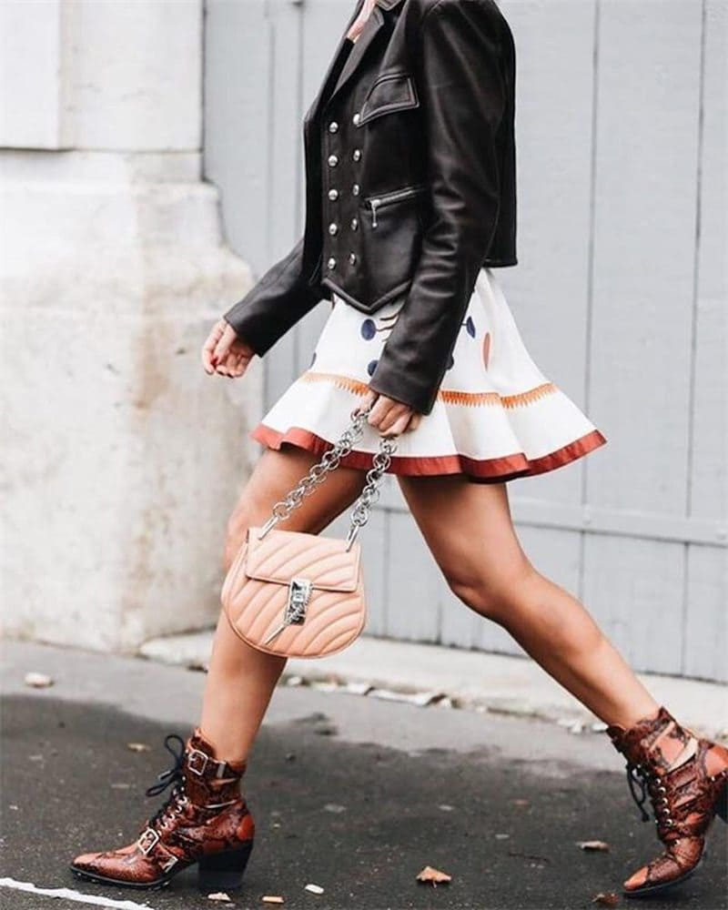
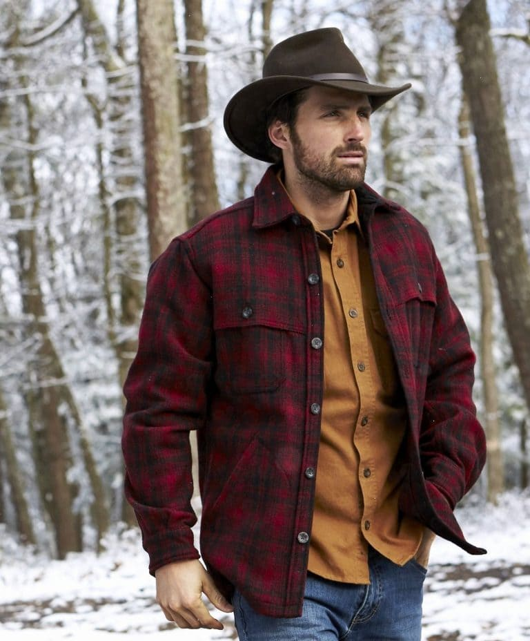

формулы
образов
- Джинсы + рубашка + ботинки = образ кантри-музыканта или ковбоя.
- Платье + кожаные сапоги = романтичный образ.
- Юбка + ботфорты = романтичный образ.
- Джинсы + жилет + шляпа = образ ковбоя или ковбойки.
- Рубашка + жакет + ботинки = формальный образ.




1 / 4
формальный образ
2 / 4
романтичный образ
3 / 4
ковбойский образ
4 / 4
образ кантри музыканта